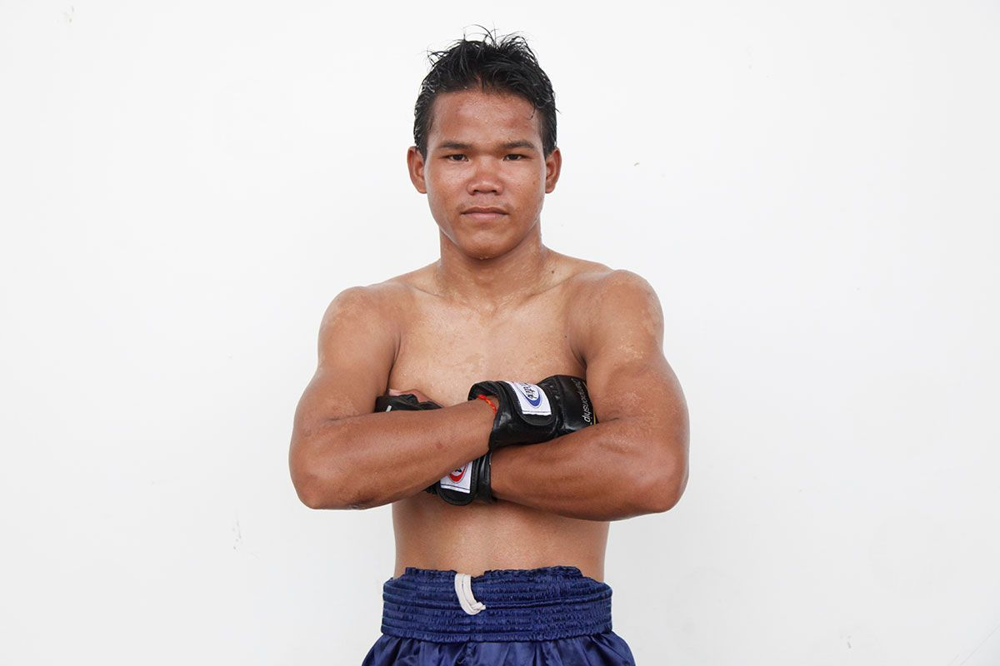

Card title
For the first time ever, the Cambodian martial art of Kun Khmer will be represented in ONE Super Series.
At ONE: PINNACLE OF POWER, one of the sport’s best practitioners is ready to showcase Cambodia’s national striking art to the world, and against a celebrated Muay Thai World Champion to boot.
Sok Thy (221-36-12 Kun Khmer) is bringing youth and huge talent to the ring against Lerdsila Phuket Top Team at the Studio City Event Center on Saturday, 23 June, in Macau.
As the 20-year-old prepares for his big moment on the global stage for martial arts, we take this opportunity to learn a little bit more about the 2018 Cambodian National Kun Khmer Champion.
A Hunger For More

Thy was raised in a small village in Banteay Meanchey, a northwestern Cambodian province that borders Thailand. The province is known for its rice farms, which is a huge part of the local economy and Cambodian society.
Although Thy’s parents initially worked in the rice fields for a low wage, they switched jobs in an effort to bring in more money to support their two sons.
“My family were normal farmers at first, but then they turned to hard manual labor at construction sites around Cambodia and Thailand. I helped my parents when they needed,” he says.
Thy always wanted to do something more to help his parents and improve their financial situation. That became his life’s goal.
“My motivation was, and still is, to give my family a better life,” he explains. “It is my duty as a son.”
Finding Confidence In Kun Khmer
https://www.facebook.com/kurnkhmerboran/posts/737209136667724
Thy was also concerned with making a better life for himself – on a social level as well as an economic one
The Cambodian was frequently picked on by the other children in his community. He experienced both physical and psychological abuse, and found it difficult to cope.
“I was always smaller than the other kids,” he explains. “They made fun of my head being bigger than my body. I would cry all the time, and go and hide in the farmland.”
Fortunately, he could lean on his family, and when his father introduced him and his older brother to Kun Khmer, Thy found an outlet in which he could develop the physical and mental strength to deal with the bullies who tormented him.
Thy’s dad was a fan of the sport, and his province produced some of the country’s best practitioners. Because of that, the diminutive athlete felt destined for success when he began training at the age of 6.
“Coming from Banteay Meanchey, which is known for some of the best Khmer fighters from past to present, it was already in my blood,” he adds.
“My best memory was spending time training with my father and my brother.
“I had to overcome bigger and stronger kids picking on me because I was always scared, but martial arts helped me build confidence.”